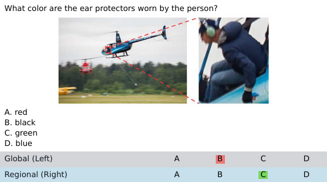
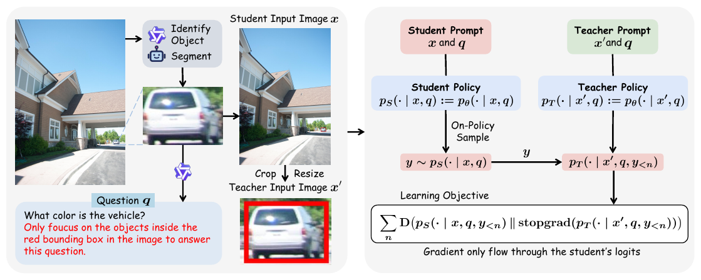
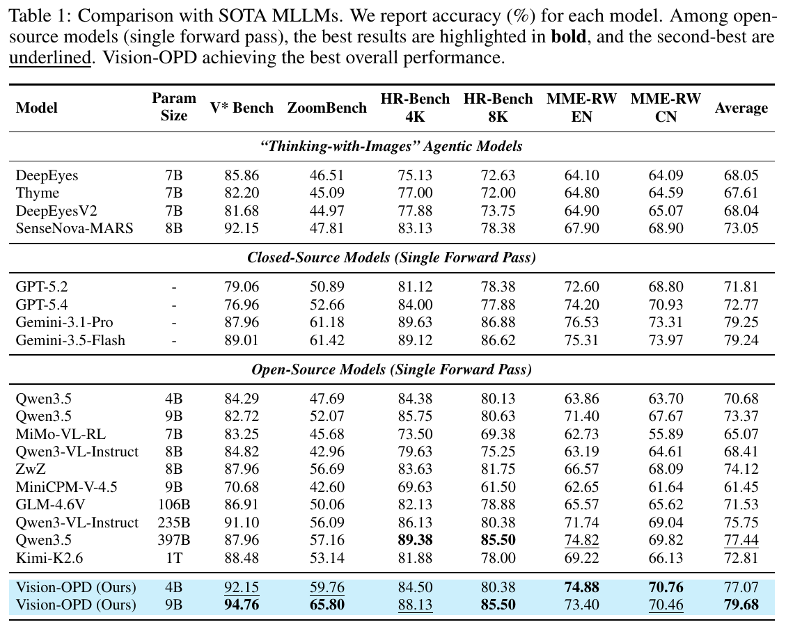

Multimodal LLMs are already strong at general image understanding — but they stumble whenever the answer hinges on a small but decisive detail in the image, often producing a "plausible-looking yet wrong" reply. 多模态大模型（MLLM）如今在通用看图说话上已经相当能打，但只要问题的答案藏在图里一小块决定性的细节上，它们就常常翻车——给出一个"看着挺像、其实答错"的回答。
We observe a recurring phenomenon: the same model answers fine-grained questions far more accurately when fed an evidence-centered crop than when fed the full image. The model does not fail to recognize the detail — rather, when that detail is buried among the full image's flood of visual tokens, it cannot focus its attention on the truly relevant evidence. We call this the regional-to-global perception gap. 我们注意到一个反复出现的现象：同一个模型，把"对准关键证据、裁剪放大后的局部图"喂给它，回答细粒度问题的准确率，明显高于喂完整大图。 也就是说，模型并不是"认不出"这个细节，而是当细节淹没在整张图的海量视觉 token 里时，它没法把注意力盯到真正相关的证据上。我们把这道坎叫作区域到全局的感知鸿沟（regional-to-global gap）。
A concrete example with Qwen3.5-9B — "What color are the ear protectors worn by the person?": 先直观感受一下这道鸿沟。以 Qwen3.5-9B 为例，问它「图中人物戴的护耳是什么颜色？」：

Recent "Thinking-with-Images" methods equip models with crop-and-zoom visual tools so they can inspect local regions at inference time. This works — but at the cost of repeatedly re-encoding images and re-invoking the model, sharply increasing inference overhead. 最近流行的 "Thinking-with-Images"（边想边看）给模型配上裁剪、放大的视觉工具，让它在推理时主动去抠局部，确实有效，但代价是反复编码图像、反复调用模型，推理开销大幅增加。
Can we bake the benefit of "zooming in on the key region so the evidence stands out" directly into the model through training — so that a single forward pass can exploit fine-grained evidence from the full image, with no inference-time tools at all? 能不能把"放大关键区域、让证据从背景里凸显出来"这个好处，通过训练直接内化进模型，让它一次前向传播就能从整图里用上细粒度证据，而不必在推理时动用任何工具？
Since the model is consistently better at the local view than the global one, its behavior on the crop is a ready-made, privileged supervision signal for improving its full-image behavior — let the former teach the latter, internalizing the benefit of "zooming" into a single forward pass. 既然模型看局部一向比看全局强，那么它看裁剪图时的表现，就是一份现成的、可以拿来提升全图表现的特权监督信号——用前者去教后者，把"放大"的收益内化成单次前向传播的能力。

We propose Vision-OPD (Vision On-Policy Distillation), a regional-to-global online self-distillation framework for fine-grained visual understanding. From one and the same model, it instantiates two policies that differ only in what they see: 由此，我们提出 Vision-OPD（Vision On-Policy Distillation），一个面向细粒度视觉理解的区域到全局在线自蒸馏框架。它的精髓在于，从同一个模型里派生出两个"视角不同"的策略：
The teacher conditions on the zoomed crop x', the student on the full image x; both are initialized from the same model. Under the clean local view, the teacher offers the student a "built-in magnifier that needs no extra decoding." For each sample (x, x', q):
老师看裁剪放大图 x'，学生看完整图像 x，两者从同一模型初始化。在干净的局部视角下，老师能给学生提供一份"自带放大镜、却不必额外解码"的指导。训练时，对每个样本 (x, x', q)：
x and question q, generates a trajectory y on-policy.
学生看着全图 x 和问题 q，自己生成一条回答轨迹 y。y, the student (full image) and teacher (crop) each give a next-token distribution over the same prefix.
对 y 的每个位置，学生（看全图）和老师（看裁剪图）在相同前缀下各给出下一 token 的分布。Because the training prefix is the student's own generation, the train/inference state distributions match — avoiding the compounding "prefix-mismatch" error of offline distillation. And because every token receives a meaningful gradient, training never stalls even when a whole batch happens to be all-correct or all-wrong. 因为训练前缀就是学生自己生成的序列，训练和推理的状态分布对得上，避开了离线蒸馏里"前缀对不上、误差越滚越大"的毛病；又因为每个 token 都拿到有意义的梯度，哪怕一批样本恰好全对或全错，训练也不会停摆。
A fully automatic pipeline builds triples (x, x', q) from unlabeled images — only about 6.2K in total:
我们用一条全自动流水线，从无标注图像里造出三元组 (x, x', q)，总共合成约 6.2K 条：
R most likely to hold fine-grained evidence.
对原图做物体识别和分割，挑出面积占比很小（最可能藏着细粒度证据）的区域 R。q answerable "from that region alone."
让模型给每个区域生成一个"光看这块就能答"的问题 q。x.
把区域的边界框叠回原图，再加一句空间约束（比如"只关注红框里的物体"），得到学生输入 x。x'.
把这块区域裁剪、放大 2×，得到老师输入 x'。The same question is posed under both views; the gap between them is exactly the signal self-distillation learns from. 同一个问题，在两种视角下各问一遍，两者的差距就是自蒸馏要学的信号。
Altogether, Vision-OPD satisfies five conditions at once: on-policy sampling, dense token-level supervision, no external teacher, no ground-truth labels, and no verifier. Since crops x' are drawn fully automatically from unlabeled images, the method adapts to any image corpus and internalizes fine-grained visual understanding into a single forward pass.
到这一步，Vision-OPD 同时满足五个条件：在线采样、稠密 token 级监督、不用外部老师、不用真值标签、不用验证器。又因为裁剪图 x' 是从无标注图像里全自动抽出来的，这套方法能适配任意图像语料，把细粒度视觉理解直接内化进一次前向传播。
We apply Vision-OPD to Qwen3.5-4B/9B and evaluate on fine-grained visual understanding benchmarks: V* Bench, ZoomBench, HR-Bench 4K/8K, and MME-RealWorld (EN/CN). 我们把 Vision-OPD 用在 Qwen3.5-4B/9B 上，在 V* Bench、ZoomBench、HR-Bench 4K/8K、MME-RealWorld(EN/CN) 等细粒度视觉理解基准上评测。

Vision-OPD-4B also reaches 77.07, showing the method can effectively "pack" fine-grained visual understanding into existing models. Vision-OPD-4B 的平均分也有 77.07，说明 Vision-OPD 确实能把细粒度视觉理解的本事，有效地"装"进现有模型里。
Crucially, it is specialized yet not lopsided: on held-out benchmarks outside the training distribution (MMVP, CV-Bench, MMStar, POPE), it maintains or even improves general perception and reasoning — no "learn the new, forget the old" common to task-specific fine-tuning. The gains do not come at the cost of forgetting. 更难得的是它专精却不偏科：在训练分布之外的基准（MMVP、CV-Bench、MMStar、POPE）上，它保持甚至提升了通用的看图与推理能力，没有出现专项微调常见的"学了新的、忘了旧的"。换句话说，这份提升不是拿遗忘换来的。
We present Vision-OPD, a regional-to-global online self-distillation framework for fine-grained visual understanding. The insight is simple: an MLLM's fine-grained bottleneck is often not "can it recognize" but "can it stay focused" — and the model's own privileged perception under a crop can supervise its full-image behavior. From a single model, Vision-OPD derives a crop teacher and a full-image student and runs token-level self-distillation on the student's on-policy trajectories, with no stronger external teacher, no ground-truth labels, no reward verifier, and no inference-time tools. With only ~6.2K fully-auto-synthesized examples, it lifts a 9B model to match or exceed closed-source models, far larger open-source models, and "Thinking-with-Images" agentic methods on fine-grained benchmarks — without sacrificing general ability. 我们提出了 Vision-OPD——一个面向细粒度视觉理解的区域到全局在线自蒸馏框架。它背后的洞见很简单：大模型的细粒度瓶颈，往往不在"认不认得"，而在"盯不盯得住"；而模型自己在裁剪条件下的特权感知，恰好可以拿来监督它的全图行为。Vision-OPD 从同一个模型派生出裁剪老师和全图学生，在学生的在线轨迹上做 token 级自蒸馏，不用更强的外部老师、不用真值标签、不用奖励验证器，推理时也不用任何工具。仅凭约 6.2K 条全自动合成数据，它就让一个 9B 模型在多个细粒度视觉理解基准上，打平甚至超过了闭源模型、更大的开源模型和 "Thinking-with-Images" 智能体方法，同时不丢通用能力。